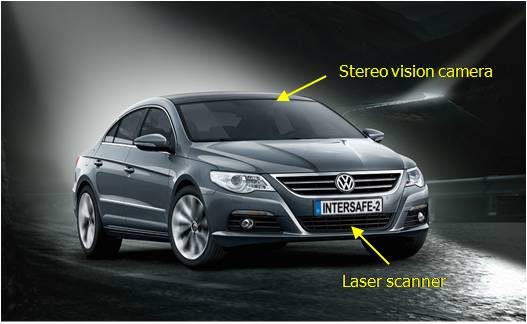
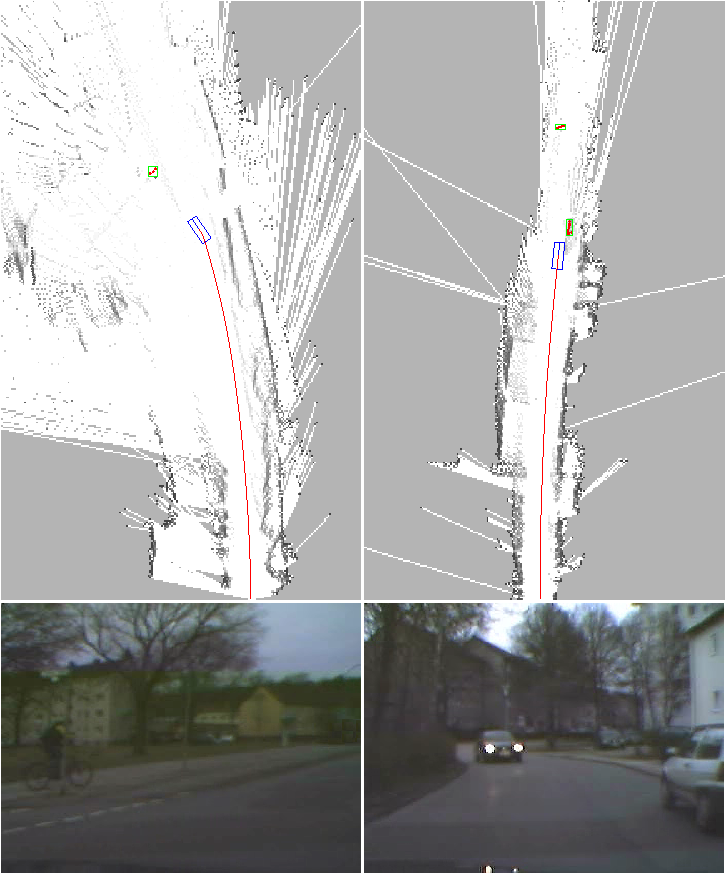

The INTERSAFE-2 european project aims to develop and demonstrate a Cooperative Intersection Safety System (CISS) that is able to significantly reduce injury and fatal accidents at intersections. In this project, we are in charge of developping the perception module for the Volkswagen Demonstrator.
The project started in june 2008 and will end in june 2011 and has 11 partners.
Demonstrator

FIGURE 1: (a) Volkswagen demonstrator
(b) Field-of-view of the sensors.
Figure 1 illustrates the chosen sensor set and coverage area of the Volkswagen demonstrator car. The sensor set-up includes sensors which are already in serial cars available, namely front ACC radar and rear-looking radar for lane change support. These sensors are accompanied by a stereo camera system to the front with high field of view of about 60 degre. A scanning laser with a field of view of about 160 degre and dedicated radar sensors directed to +90 degre and -90 degre respectively are foreseen for measuring the objects coming from the side. These sensors are able to measure position, velocity and some geometrical parameters of the relevant objects at intersections.
Experimental Results
Moving objects detection

FIGURE 2: Experimental results show that the algorithm can successfully perform both SLAM and moving objects detection in real time for different environments.
On this demonstrator, we test our approach for SLAM with moving objects detection [Vu07]. The grid has a size of 25m $\times$ 20m and each cell has a size of 20cms. A complete description of this work could be found in [Baig09].
In Figure 2, the first column shows a left turn scenario where the demonstrator car is turning left and a cyclist is going to right in front of the vehicle. This cyclist is detected and tracked. In the second column we have a scenario where a moving vehicle is coming from opposite direction and demonstrator is crossing a vehicle on its right. In both of the cases, precise trajectories of the demonstrator are achieved and local maps around the vehicle are constructed consistently.
A video on SLAM + detection of moving objects could be found here .